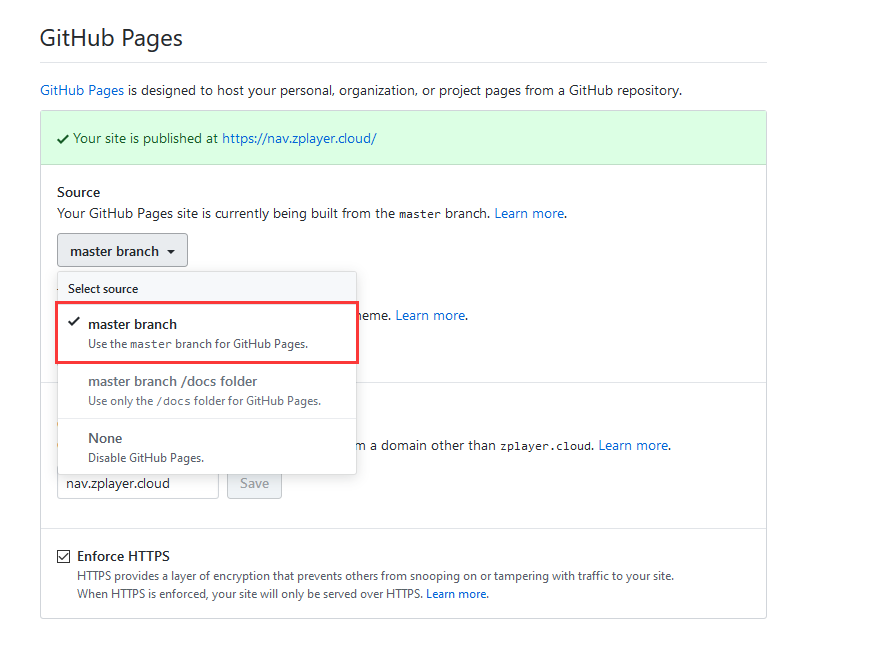
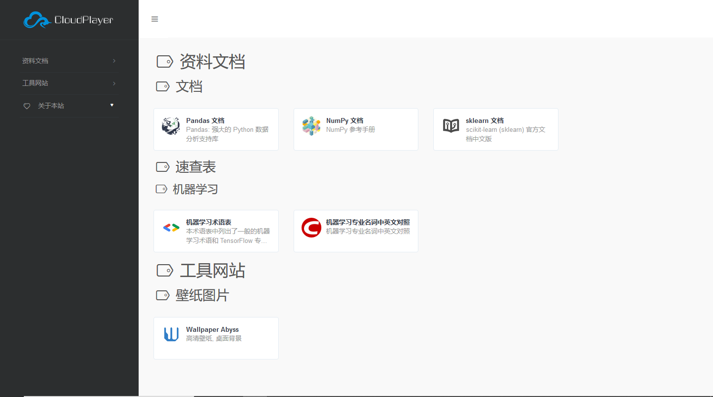

如何快速搭建一个属于自己的网址导航
收藏夹内容太多, 有时候不方便找, 那么这时你就需要一个网址导航来放你的收藏夹的内容啦! 我知道理由很牵强, 反正就是要搭网址导航, 理由什么的自己去想. 这篇博文默认你已经注册了 Github .
Fork 网址导航项目
开启 Pages 服务

进入到你 Fork 后的仓库, 进入 Settings, 拉到下面开启 GitHub Pages.
此时, 你的网址导航已经成功建立, 可以根据上面的 “Your site is published at https://xxxx.xxx"
来进入你的网址导航. 如果要自定义域名, 可以在下面那个 “Custom domain” 框框里写上你自己的域名, 然后设置 CNAME 域名解析记录到 用户名.github.io . 就可以用你自己的域名访问网址导航了.
修改内容
这个网址导航现在还不能算是你 “自己的” , 因此可以修改 index.html 来修改其成为你自己个性的网址导航. 修改的过程我就不细说了, 无非就是修改 favicon, title 这些的. 但是修改其中网址导航的网站可不是一件简单的工作, 一不留神就改错了, 因此我专门写了一个方便修改的 Python 脚本.
NavCreate
使用方法在仓库里有说, 我在这里再说一遍.
该 Python 脚本开头有 title, favicon 等变量, 你修改为自己的, 然后在 text.txt 文本文件中写入固定格式内容, 最后执行 Python 脚本, 就可以在 out.txt 中生成相应的内容, 复制进 index.html , 就可以实现自定义网址导航.
格式借鉴了 markdown 语法, 用 #, ##, ###, 生成相应的多级目录.
固定格式是指: (注意这里的逗号是英文的)
1 | 网站url,网站logo,网站名,网站描述 |
如果网站名或网站描述中有 , (英文逗号) , 需要用 , 代替
我举个例子, 如果写成下面这样
1 | # 资料文档 |
那么会生成如下页面

最后… 重点来啦! 我的网址导航: https://nav.clouder.im/